Ναυτικά σχέδια
Υφάσματα με ναυτικά σχέδια — άγκυρες, καράβια, φάροι και θαλασσινά μοτίβα — για εξοχικά, σκάφη και βεράντες.
51 φωτογραφίες · Θα τα βρείτε στο κατάστημά μας, Καλαμιώτου 12, Αθήνα 10560

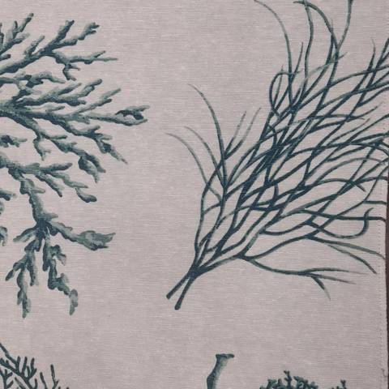

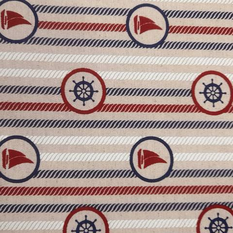

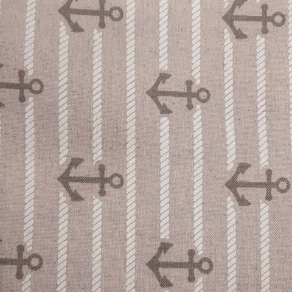


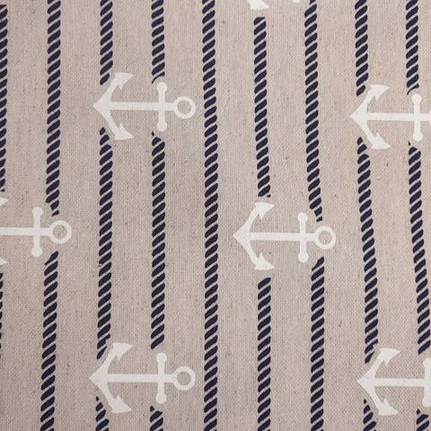

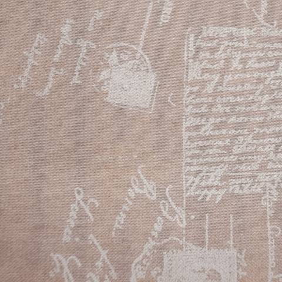

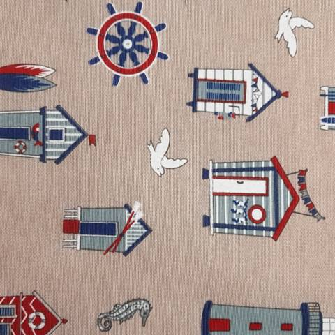


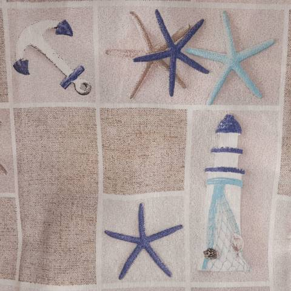


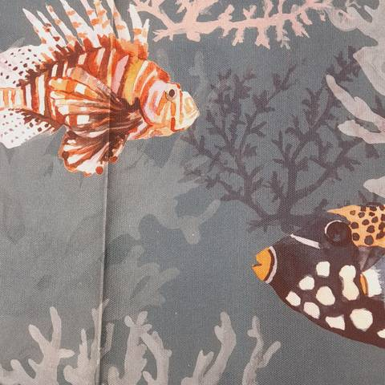

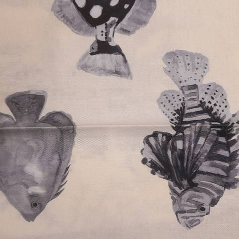

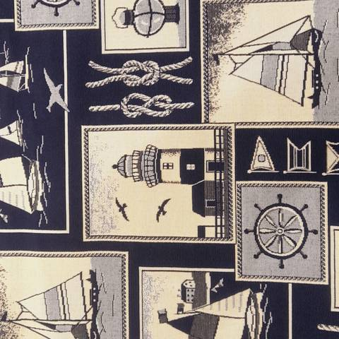

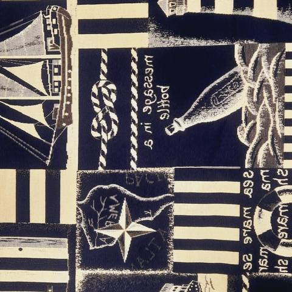

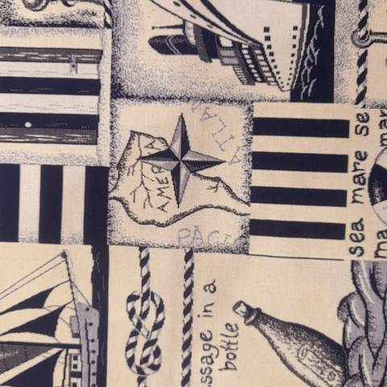

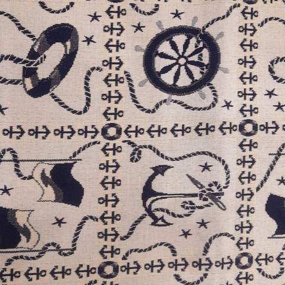

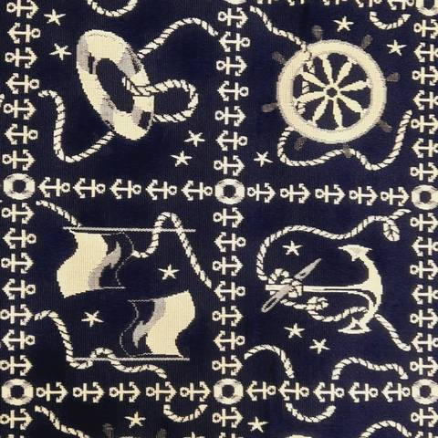


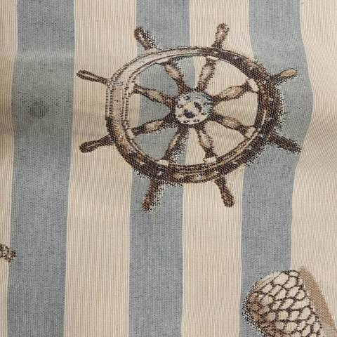

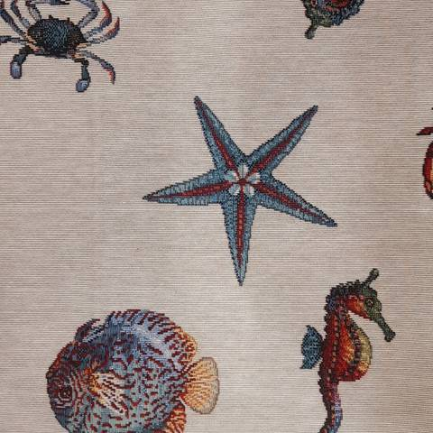


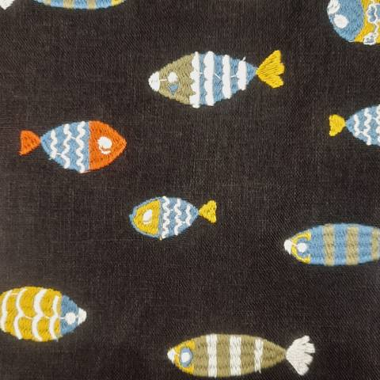

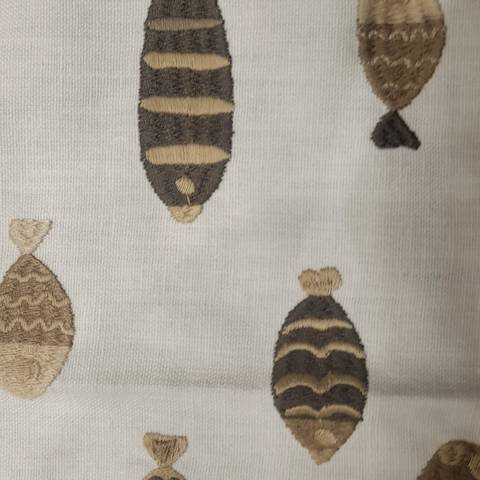

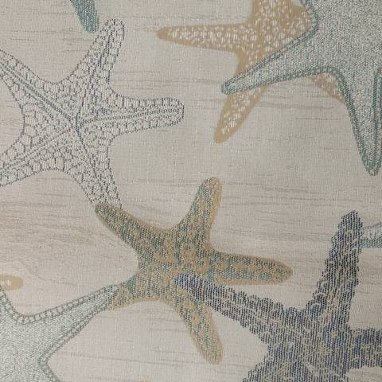

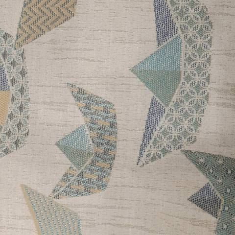

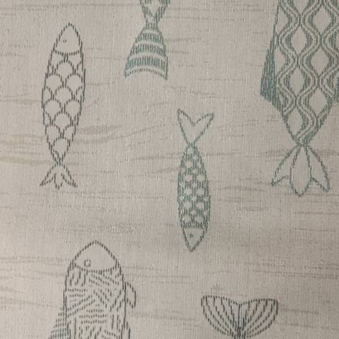

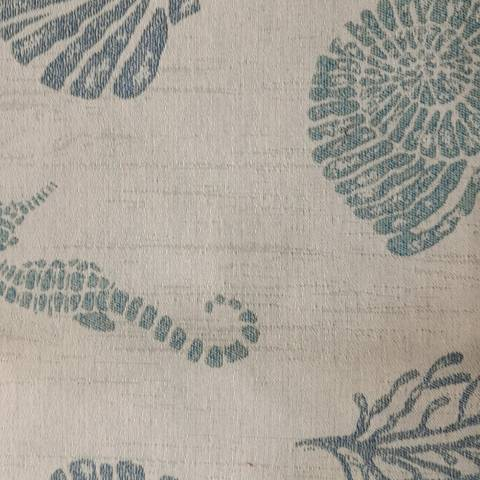

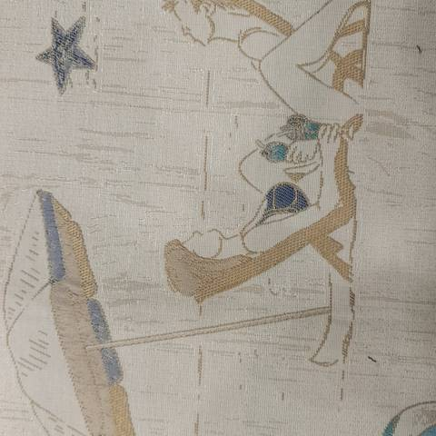

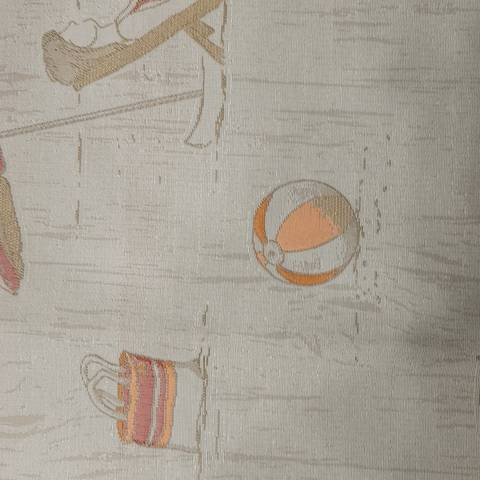

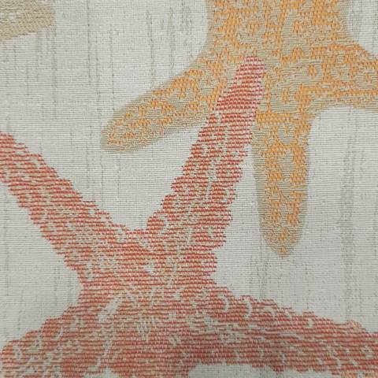

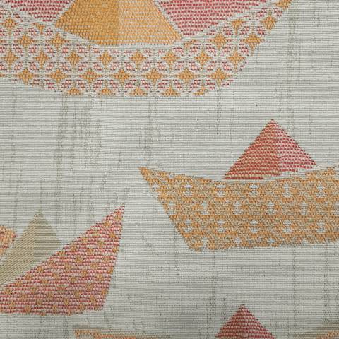

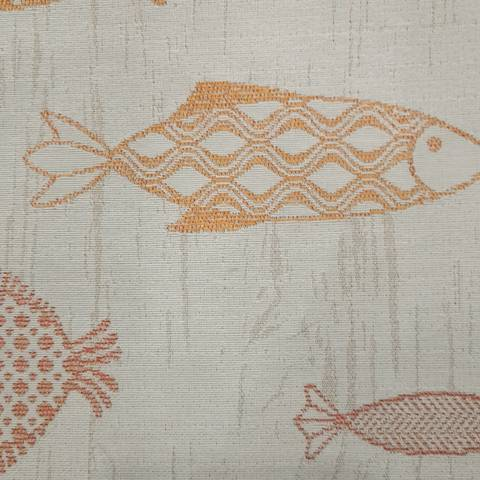

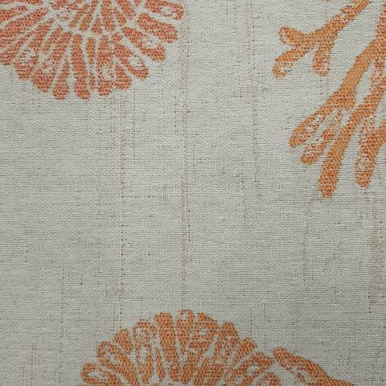

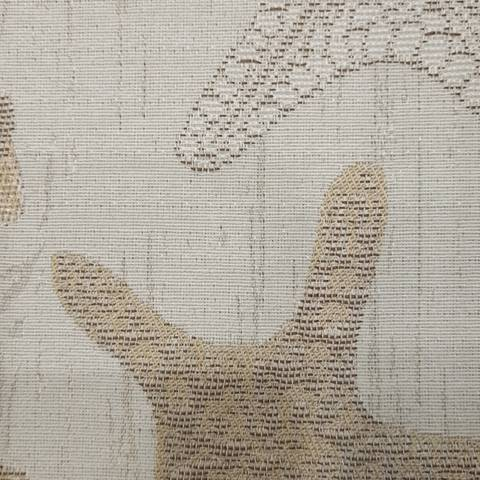

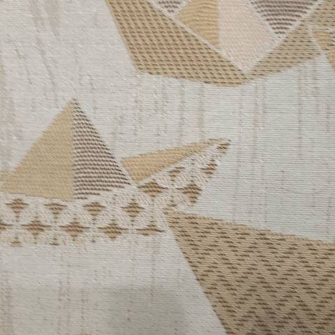

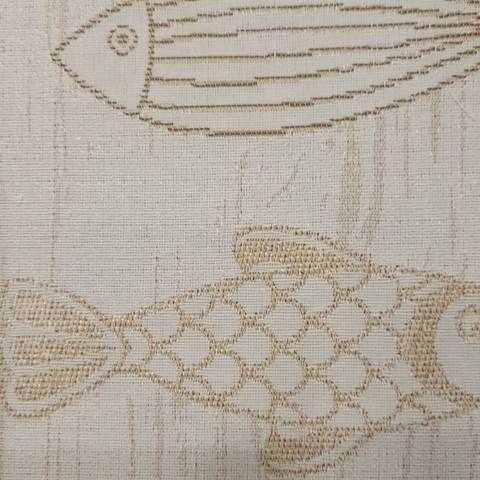

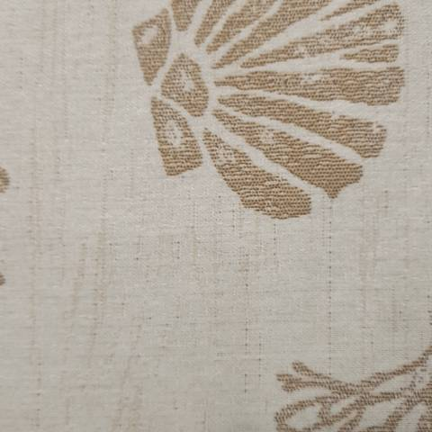

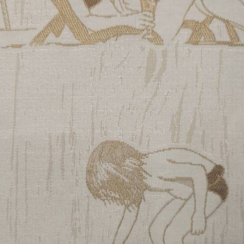

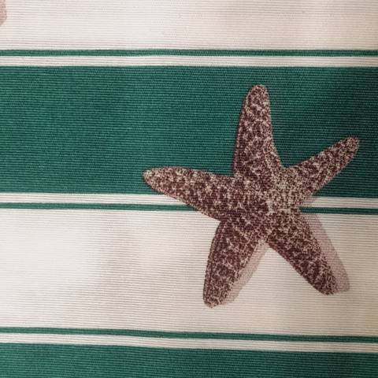

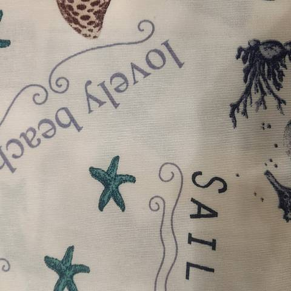

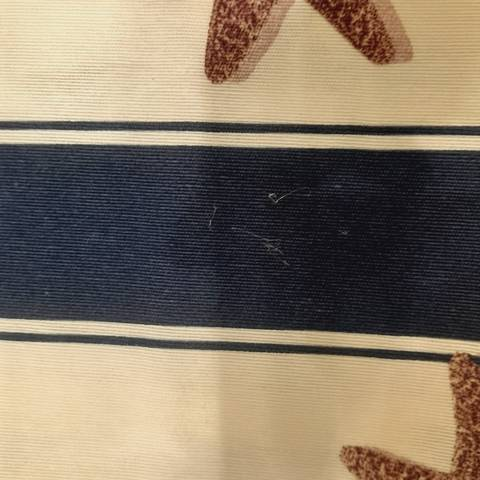

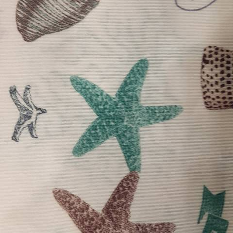

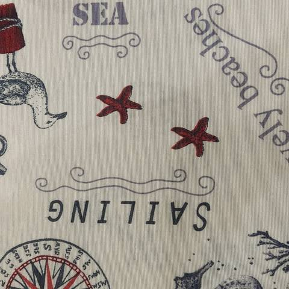


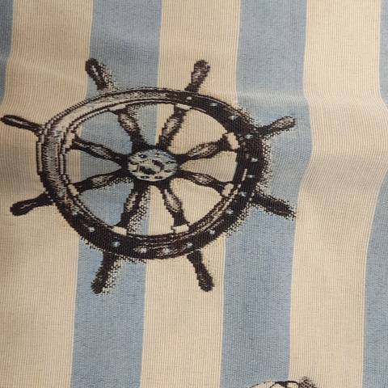

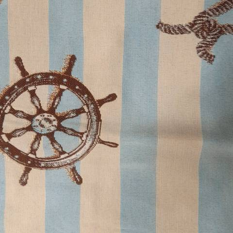

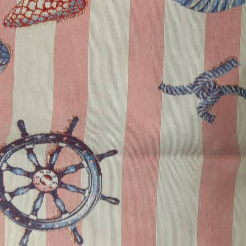

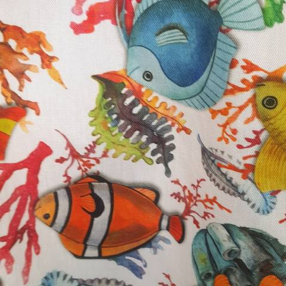
Ελάτε στο κατάστημα
ROSELA · Καλαμιώτου 12, Αθήνα 10560 · Οικογενειακή επιχείρηση από το 1996. Αναλαμβάνουμε ραφή κουρτινών, τραπεζομάντηλων, ριχταριών και μαξιλαριών, καθώς και τοποθέτηση κουρτινών, κουρτινόξυλων και ρόλερ.